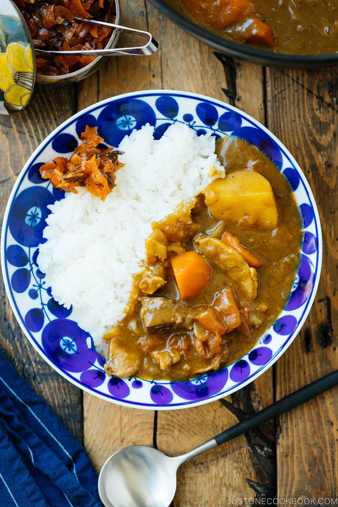

Japanese Tomato Curry

Description
What is Japanese Curry?
Japanese curry is quite different from most other curries in the world. It has a thicker consistency and the taste leans on the sweet and savory side, not necessarily spicy.
The common ingredients include one or a mixture of protein and root vegetables like sweet onions, carrots, and potatoes. The sauce is thickened by a roux (a mixture of fat and flour) and layered with spices and earthy flavors. Compared to Thai or Indian curry, Japanese curry might remind you of a hearty stew.
Juicy and fruity tomatoes are the bright star of this Japanese Tomato Curry. For this curry rice dish, I simmer tender pieces of beef and pork along with tomatoes, carrots, and caramelized onions in a rich, savory sauce. The sweetness of the vegetables complements the curry's warm spices and mild heat level. Served with Japanese steamed rice, it's a hearty stew that makes for a perfect weekend lunch or dinner!
Ingredients
Curry Ingredients
- 3 tomatoes (1 lb, 454 g for 8 servings; use round and firm tomatoes that are juicy, fruity, and full of flavor; vine-ripened and heirloom varieties work well; avoid beefsteak tomatoes for their mild flavor)
- 3 russet potatoes (¾ lb, 340 g for 8 servings; you can also use Yukon gold potatoes)
- 3 onions (1 lb, 454 g for 8 servings)
- 2 carrots (½ lb, 227 g for 8 servings)
- 2 cloves garlic
- 1 knob ginger (1 inch, 2.5 cm; 1 tsp grated for 8 servings)
- 454 g boneless beef chuck roast (stew beef is slightly more economical but not as tender; for vegetarian, substitute king oyster mushrooms and/or eggplants)
- 227 g pork tenderloin (use king oyster mushrooms and/or eggplants for vegetarian)
- ½ tsp kosher salt (Diamond Crystal; use half for table salt)
- ¼ tsp freshly ground black pepper
For Cooking the Curry
- 2 Tbsp neutral-flavored oil (vegetable, rice bran, canola, etc.) (divided for the beef and onions)
- 480 ml beef stock/broth (½ QT for 8 servings; store-bought beef stock is often salted; for less sodium intake, use 1 cup/240 ml beef stock + 1 cup/240 ml tomato blanching water; for vegetarian, use vegetable stock or reserved tomato blanching water)
- 480 ml reserved tomato blanching water (plus more to dilute the curry sauce, as needed)
- 1 Tbsp soy sauce
- 1 box Japanese curry roux (7-8.4 oz, 200-240 g store-bought sauce mix for 8 servings; or make your own
with my homemade Japanese Curry Roux recipe)
- kosher salt (Diamond Crystal; use half for table salt) (optional; add only if using my homemade Japanese Curry Roux recipe, which is unsalted)
Instructions
- Gather all the ingredients.
To Peel the Tomatoes
- Prepare a medium pot of water and bring it to a boil. Now, core the tomatoes: Insert the tip of a very sharp knife (like a paring knife) at the stem end, about ½ inch (1.25 cm) deep. Angle the knife and cut around the stem end in a circular motion to remove the hard core. Next, lightly score the skin on the bottom of the tomato with an "X" about 2 inches (5 cm) long. Repeat with the rest of the tomatoes.
- Gently place the tomatoes in the boiling water. Make sure there is enough water to completely submerge the tomatoes. Blanch for 15 seconds or until you see the tomato skins start to peel back. You don’t have to wait until all the skin is completely peeled. Larger tomatoes may require more time, but don’t overcook them because the flesh will become mushy.
- Using a fine-mesh skimmer or slotted spoon, remove the tomatoes and immediately transfer them to a bowl filled with ice water to quickly cool down and stop cooking.
- For this Japanese Tomato Curry recipe, RESERVE this tomato blanching water! We will use it later. When the tomatoes are cool enough to handle, peel and discard the tomato skins using the knife or your fingers.
- Cut each tomato into 8 wedges. Set aside.
To Prepare the Other Ingredients
- Peel the potatoes and remove the eyes.
- Cut the potatoes into 1½-inch (3.8 cm) pieces. Soak the pieces in water for 15 minutes (or until added to the pot later on) to remove the starch. Drain and set aside. Tip: My russet potatoes are on the small side, so I cut them into quarters. For typical russet potatoes, cut them into thirds, then cut each piece in half or quarters.
- Cut the onions in half lengthwise. Then, cut each half into thin lengthwise slices.
- Peel the carrots and cut them diagonally while rotating a quarter turn between cuts (we call this cutting technique rangiri in Japanese).
- Peel the garlic cloves and mince them (I use this garlic press). Peel and grate the ginger, measure the amount needed, and set aside.
- Cut the beef chuck roast into 1½-inch (3.8 cm) cubes. Next, cut the pork tenderloin into ¼-inch (6.3 mm) slices.
- Lightly sprinkle the beef and pork with salt and pepper.
To Cook the Meat and Onions
- Preheat a large heavy-bottomed pot (I used this 5.5-QT Staub Dutch oven) on medium heat. When the pot is hot, add half of the oil. Add some of the beef cubes in a single layer, leaving plenty of space between each piece of meat. Make sure not to crowd the skillet; otherwise, the excess moisture in the pan will end up "steaming" the meat. Cook the beef in 2-3 batches.
- Sear the beef cubes (do not move them) on one side until brown and crusty, about 3-4 minutes, then flip to cook the other side. The meat will release itself from the pan when the surface is seared nicely. Transfer the seared meat to a plate and work on the next batch.
- When you finish searing all the beef, add the onions to the pot and stir to coat them with the oil.
- Sauté the onions, stirring once in a while, for about 6-8 minutes. When the onions are wilted, reduce the stove's heat to medium low (as they tend to burn quickly).
- Once the onions are tender, translucent, and a bit caramelized, add the grated ginger and minced garlic to the pot and stir to mix.
- Add the pork tenderloin, seared beef, and any juices from the plate.
- Stir to mix.
To Simmer the Ingredients
- Next, add the beef stock.
- Measure the reserved tomato blanching water and add it to the pot.
- Add the tomatoes and carrots. (If you are using Yukon gold potatoes, you can add them now. Otherwise, don't add the russet potatoes yet.) The cooking liquid should just cover the ingredients; if it doesn’t, add some of the tomato blanching water to the pot.
- Cover the pot with a tight-fitting lid and bring it to a boil. Tip: Compared to Le Creuset, I think Staub has a great seal on the lid and prevents evaporation.
- Once boiling, skim off the scum and fat from the broth using a fine-mesh skimmer. Tip: I add water to my 2-cup measuring cup and rinse my fine-mesh skimmer in it as I go. It’s easy to remove the scum/fat from the skimmer this way.
- Add the soy sauce and cover the pot with the lid. Simmer on low heat, stirring the pot occasionally, until the meat is tender to your liking. This may take 1 hour or longer, depending on the size of the pieces and the cut of beef. Tip: While the meat might be ready after about an hour of cooking, it typically takes 2 hours of simmering for fork tender beef. Tip: If the cooking liquid has evaporated, you may need to add more beef stock or tomato blanching water, enough to just cover the ingredients.
- When the beef is tender, add the russet potatoes, close the lid, and simmer for an additional 15 minutes until the potatoes are cooked through.
- When the potatoes are tender (check by piercing one with a wooden skewer), turn off the heat.
To Add the Curry Roux
- Put 1-2 cubes of the curry sauce roux in a ladleful of cooking liquid, slowly let it dissolve with a spoon or chopsticks, and stir it into the broth to incorporate. Repeat with the rest of the blocks, 2 cubes at a time. Adjust the amount of curry sauce roux to your taste. You may not need to use all the roux; reserve the extra cubes for another use. After adding the curry roux, simmer on the lowest heat, stirring often, for 3-5 minutes until the sauce thickens. Be careful not to burn the curry sauce! If it's too thick, add more tomato blanching water to dilute. If the sauce is too thin and soupy, uncover the pot and simmer a bit longer to reduce the liquid.
- If you're using my homemade Japanese Curry Roux, which is unsalted, season the curry sauce with an additional 2-4 tsp of salt, to taste.
To Serve
- Serve the Tomato Curry hot on individual plates or shallow bowls alongside Japanese steamed rice and top with fukujinzuke (pickled radish). In the Netflix drama The Makanai, Kiyo serves tomato curry with suage vegetables (eggplant and shishito peppers). You can deep fry vegetables of your choice following my Sapporo Soup Curry recipe and served on top of tomato curry.
To Store
- Keep the leftovers in an airtight glass container and store it in the refrigerator for up to 3 days or in the freezer for a month. The texture of the potatoes will change in the freezer, so remove them before freezing. Defrost the frozen curry in the refrigerator for 24 hours and reheat in a pot to serve. If needed, add ¼ to ½ cup (60-120 ml) of water to dilute the curry when reheating. If you have any leftover unused curry roux, keep in an airtight container and store in the refrigerator or freezer for 1-3 months.